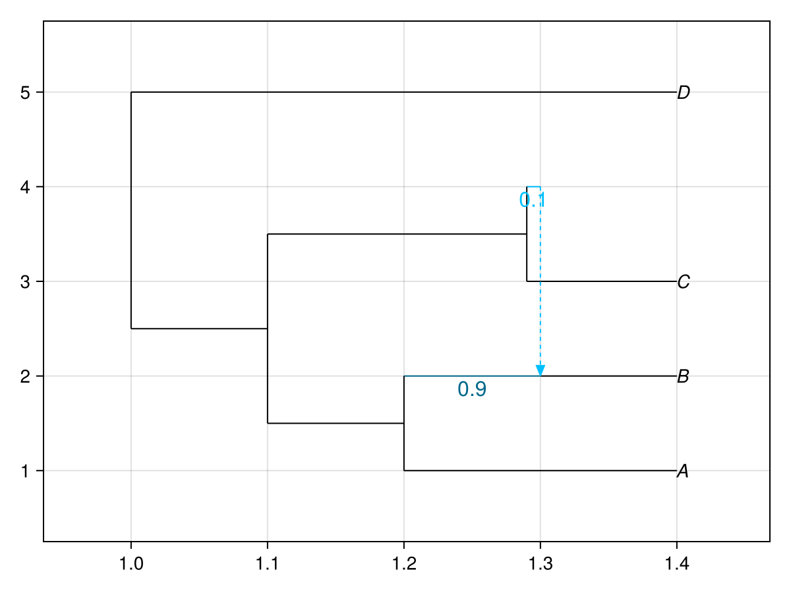

Working with PhyloNetworks
PhyloMakie can plot a network produced by PhyloNetworks.jl after converting it to a LineageNetwork. PhyloNetworks.HybridNetwork is a separate type, outside PhyloMakie's AbstractPhylogeny hierarchy. Convert it with from_hybridnetwork before calling plot or plot!.
Plot an existing network
This example uses CairoMakie and PhyloMakie from the installation guide, plus PhyloNetworks. If PhyloNetworks is not already in the active environment, add it with using Pkg; Pkg.add("PhyloNetworks").
Load the packages and create a HybridNetwork. In an analysis workflow, hybrid_network could instead be a result already obtained from PhyloNetworks:
using CairoMakie
using PhyloMakie
import PhyloNetworks
CairoMakie.activate!()
hybrid_network = PhyloNetworks.readnewick(
"(((A:.2,(B:.1)#H1:.1::0.9):.1,(C:.11,#H1:.01::0.1):.19):.1,D:.4);",
)
phylogeny = from_hybridnetwork(hybrid_network)LineageNetwork(9 nodes, 9 edges, 4 leaves, 1 hybrid nodes, rooted)The converted phylogeny supports the same plotting options as one read directly by PhyloMakie:
result = plot(phylogeny; useedgelength = true, showgamma = true)
result.figure
See The figure, axis, and plot result for the meaning of .figure, .axis, and .plot. The same converted phylogeny can be passed to plot!(axis, phylogeny) in an existing Makie layout.
Convert back to PhyloNetworks
Use to_hybridnetwork when a subsequent PhyloNetworks operation needs a HybridNetwork. For example, serialize the converted network to extended Newick with PhyloNetworks' writenewick:
julia> exported_network = to_hybridnetwork(phylogeny);julia> typeof(exported_network)PhyloNetworks.HybridNetworkjulia> PhyloNetworks.writenewick(exported_network)"(((A:0.2,(B:0.1)#H1:0.1::0.9):0.1,(C:0.11,#H1:0.01::0.1):0.19):0.1,D:0.4);"
Julia's convert also supports both directions:
julia> native_copy = convert(LineageNetwork, hybrid_network);julia> hybrid_copy = convert(PhyloNetworks.HybridNetwork, native_copy);julia> native_copy isa LineageNetworktruejulia> hybrid_copy isa PhyloNetworks.HybridNetworktrue
What conversion preserves
Conversion transfers the topology, root, node and edge identifiers, node labels, edge lengths, inheritance probabilities, and major/minor hybrid-edge classifications. Each call creates independent nodes and edges. Conversion does not modify the input, and later changes to one representation do not automatically update the other.
PhyloNetworks traversal caches, work arrays, partitions, and inference scores are not copied into LineageNetwork. Conversion back constructs a fresh HybridNetwork and rebuilds its derived state. Custom LineageNetwork node, edge, and graph data payloads are not transferred to HybridNetwork.
For workflows starting with a file or string, PhyloMakie's readers already return LineageNetwork values. They use PhyloNetworks to parse Newick and NEXUS content and perform the conversion automatically; no explicit conversion is needed in those workflows.